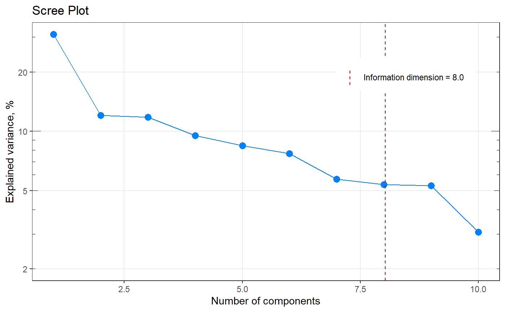

[+] Scree plot with indicated information dimension (ggplot2)
qplot_infoDim.RdPlot a screeplot and with indicated information dimension.
qplot_infoDim( obj, n.comp.SHOW = 20, selected = NA, Title = "Scree Plot", y.log = TRUE, show.legend = TRUE, legend.position = c(0.8, 0.8), ggtheme = theme_bw() ) qplot_screeplot(obj, ...) qplot_scree(obj, ...)
Arguments
| obj | Either a matrix (rows = observations, columns = variables;
to be passed to |
|---|---|
| n.comp.SHOW | A number of components to show on x axis, default is 20. This number is corrected if (a) vector of eigenvalues is smaller than 20 or (b) information dimension is higher than 15. |
| selected | A number of components sellected, will be plotted as a separate vertical line (optional parameter). |
| Title | The main title of the plot. |
| y.log | Logical. If |
| show.legend | Logical. If |
| legend.position | the position of the legend ("none", "left", "right", "bottom", "top", or two-element numeric vector). |
| ggtheme | A function of ggplot2 theme to apply (e.g.:
ggtheme). Default is |
| ... | (The same parameters as above). |
Value
A scree plot : plot which helps to
determine the number of nenessary components (e.g. for PCA).
(A "ggplot" object.)
Note
http://www.originlab.com/doc
See also
Other spHelper plots:
check_palette(),
layer_spRangeMean(),
plot_colors(),
plot_hyPalette(),
plot_spCompare(),
plot_spDiff(),
plot_spDistribution(),
qplot_confusion(),
qplot_crosstab(),
qplot_kAmp(),
qplot_kSp(),
qplot_prediction(),
qplot_spRangeCenter(),
qplot_spRangeMedian(),
qplot_spStat(),
qplot_spc(),
rmExpr(),
rm_stripes(),
stat_chull()
Other component analysis / factorisation related functions in spHelper:
getScores(),
infoDim(),
plot_spDiff(),
qplot_kAmp(),
qplot_kSp(),
qplot_spc(),
reconstructSp(),
sortLoadings(),
unipeak(),
whichOutlier()
Other information dimension functions:
infoDim()
Examples
# ------------------------------------------------------ my_matrix <- matrix(rexp(200, rate=.1), ncol=20) my_result <- infoDim(my_matrix) # Investigate the result str(my_result)#> List of 5 #> $ dim : num 9 #> $ exactDim : num 8.03 #> $ explained : num [1:10] 0.3109 0.1202 0.1179 0.0951 0.0847 ... #> $ eigenvalues: num [1:10] 134.5 52 51 41.2 36.6 ... #> $ n.comp : int [1:10] 1 2 3 4 5 6 7 8 9 10 #> - attr(*, "class")= chr [1:2] "list" "infoDim"my_result$exactDim#> [1] 8.027836my_result$dim#> [1] 9#Plot my_plot <- qplot_infoDim(my_result) my_plotqplot_infoDim(my_matrix)